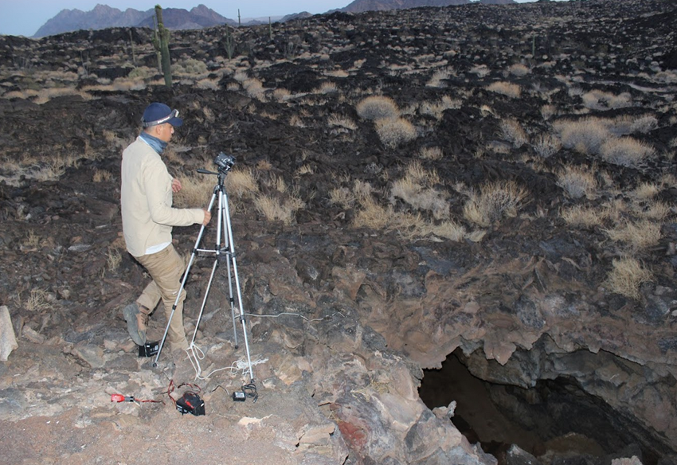
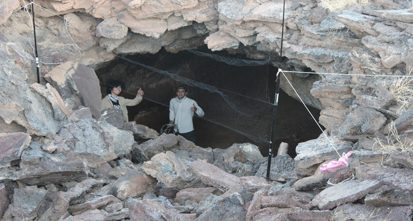

Proyectos
Proyecto: Monitoreo del refugio de maternidad de Leptonycteris yerbabuenae en la reserva de la bioesfera El Pinacate y gran desierto de Altar
Objetivos:
- Estudiar las variaciones a través del tiempo en el tamaño y éxito reproductivo de la colonia de maternidad más grande conocida de la especie.
-
Revelar los movimientos migratorios de las hembras previo y posterior a su estancia en el refugio.
Descripción del Proyecto
En la reserva de la biosfera El Pinacate y Gran Desierto de Altar, en un túnel en mitad de un derrame de lava de miles de años de antigüedad,
se encuentra el refugio de maternidad más grande conocido del murciélago magueyero menor (
Leptonycteris yerbabuenae). Después de aparearse en
las costas del centro del país, estas hembras viajan más de 1,600 kilómetros hasta ésta y algunas cuevas en el norte de México y sur
de Estados Unidos para dar a luz y aprovechar la abundantísima floración de miles de saguaros y otros cactus columnares del desierto
sonorense. El refugio ubicado en El Pinacate ha sido objeto de estudio durante más de 20 años, ayudándonos a entender las relaciones
madre-cría, la dieta, los movimientos nocturnos, el microbioma y muchas otras características de la especie. Hoy en día, gracias al uso
de RFID PIT tags para el marcaje de miles de hembras de la especie y la instalación de lectores autónomos de tecnología de punta en cuevas
a lo largo de toda la frontera y Baja California, en una colaboración con más de una docena de investigadoras en México y Estados Unidos, las rutas migratorias de esta especie y el rol ancillar de El Pinacate en ellas
se han vuelto cada vez más claros.

